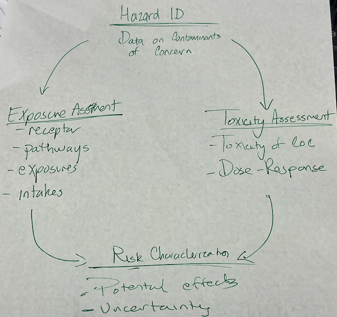
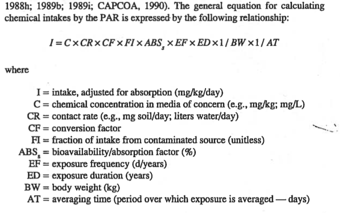
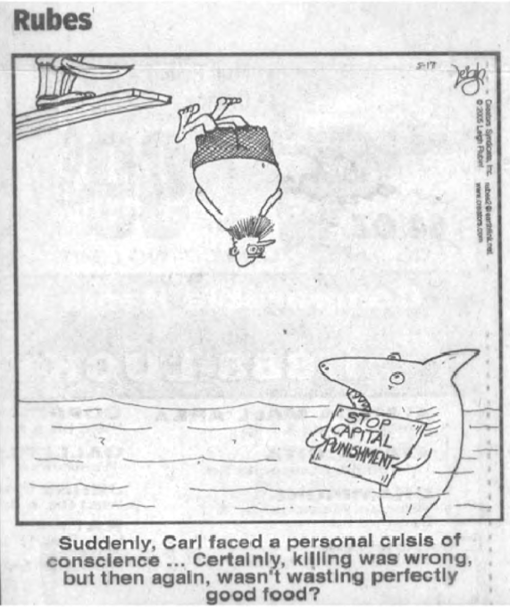

Risk Assessment¶
Risk = (Likliehood of outcome) \(\times\) (Consequence)
If we observe or predict a concentration at a point in an aquifer how bad is it? Do we have to clean it up to zero?
Usually cannot afford to! So we assess risk to establish a technologically achievable target.
The concept of a technology-based target is incorporated into the Clean Air Act and under the Clean Wasser Act, under Sections 301, 302, 304, and 306, the EPA issues technology-based effluent guidelines that establish discharge standards based on treatment technologies that are available and economically achievable. Each EPA Region issues permits that meet or exceed the guidelines and standards.
A similar concept applies in groundwater contaminantion and restoration. All these concept rely on risk as the arbiter of target values.
Note
Here is an interesting review of risks of technology-based standards; its written from a litigation lawyer point of view - but nonetheless interesting! A similar law article is The Triumph of Technology-Based Standards

Hazard ID¶
Sample collection & analytical data
presence/absence; locations
non-detects: how are these included in statistics?
< DL, or <PQL, or 1/2 DL, or zero?
A whole science of censored data is needed to be considered.
Exposure Assessment¶
Pathways: inhale, ingest, absorb (through skin)
Medium: Air, water, soil
Receptor: Worker, resident, adult (70kg), child (16kg), infant (3kg)
Exposure:
\(EXP\frac{mg}{kg \cdot d} = IF(\frac{amount of medium}{d})\times C(\frac{mg}{medium}) \times EDF \times CF\)
IF == intake factor; EDF == exposure duration factor; CF == conversion factor
concentrations are compared to MCLs if available
derived from animal or human exposure
Asante-Duah, K. (1993) Hazardous Waste Risk Assessment

General AT guidelines:
Carcinogen: AT == Lifetime (70 \(\times\) 365 days)
Non-Carcinogen: AT == Approximate exposure time
Long-term:
CDI == chronic daily intake over 70 years
C == reasonably maximum exposure (time)
Short-term:
SDI == subchronic daily intake
LADD == lifetime average daily dose (cancer)
ADD == average daily dose (non-cancer)
MDD = maximum daily dose (short-term acute)
Toxicity Assessment¶
Type of adverse effects. Relates exposure magnitude to amount of effect.
An example:
Total body exposure of 100 roentgens/rad or 1 Gray unit (Gy) causes radiation sickness. Total body exposure of 400 roentgens/rad (or 4 Gy) causes radiation sickness and death in half of the individuals who are exposed.
Note
There is a missing component above - 4 Gy kills 1/2 exposed in some prescribed time interval (I recall its 30 days). This whole concept of LD50 implicitly includes some response time window.
Radiation health effects are phenomenally well studied and much toxicity understanding is directly sourced from radition behavoir.
Data Sources
US EPA IRIS Has browsable database for example part of Agent Orange
Scientific literature
Health literature VA Agent Orange
Conspiracy literature (probably less reliable) YouTube Agent Orange
All based to some extent on:
Case clusters
Short-term laboratory studies
Unethical human experiments  Although wrong, should we use the data?